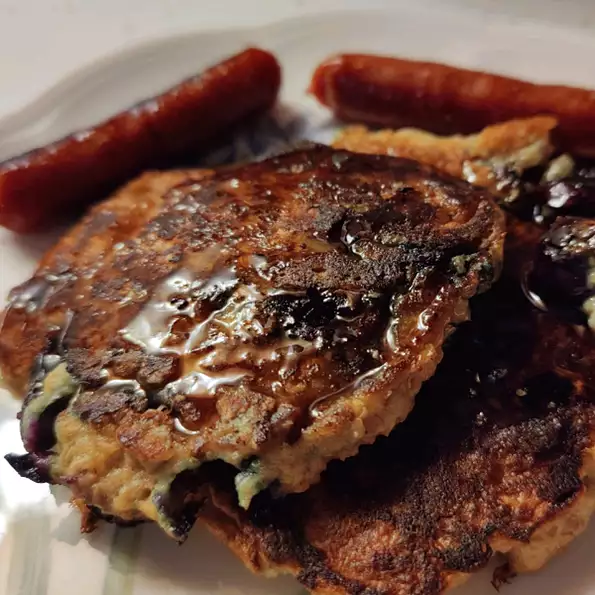

Scottish Oatcakes

Description
The perfect breakfast solution for people who cannot decide between oatmeal and pancakes, this
recipe is for the softer pancake version of the popular dry, dense, and cookie-like oat cakes.
Serve with fresh fruit and top with butter and maple syrup.
Ingredients
1 cup rolled oats
1 cup heavy cream
1 teaspoon lemon zest
2 teaspoons lemon juice
1 teaspoon honey, or to taste
1 large egg
¼ teaspoon fine salt
¼ teaspoon baking soda
¼ cup self-rising flour
¼ cup melted butter
Steps
- Bring oats and heavy cream to a simmer in a pot over medium-high heat.
Stir and cook for 1 minute and turn off the heat. Let cool down to room temperature,
at least 10 minutes.
- Transfer oat mixture into a bowl. Add lemon zest and lemon juice. Drizzle in honey and crack in an egg.
Add salt and baking soda. Mix thoroughly with a spatula. Stir in flour until no dry spots remain. Cover and
let rest for at least 1 hour.
- Heat butter in a skillet over medium heat. Scoop spoonfuls of the oat mixture into the hot skillet
and flatten to your desired thickness. Cook until browned and tops spring back when touched, 3 to 4 minutes
per side.